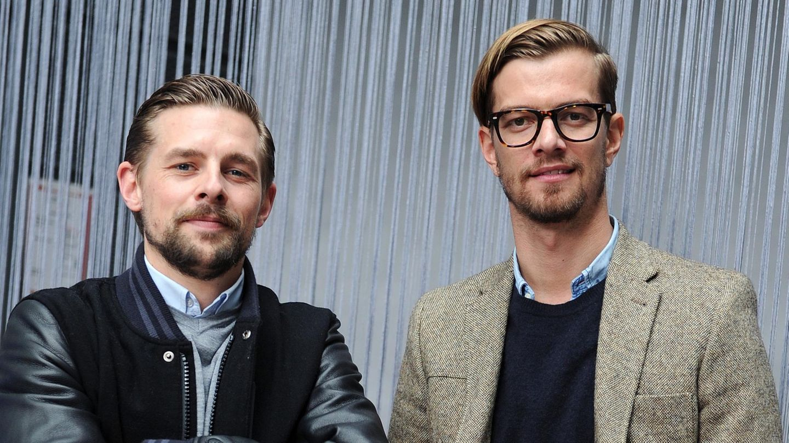

Unsere Unterstützer
Wir bedanken uns bei Personen und Organisationen, die unser Projekt unterstützen. Die folgenden kurzen Steckbriefe zeigen, wer uns unterstützt.

Klaas
Medienpersönlichkeit & Unterstützer
Klaas hilft dabei, das Thema Reichweite & Verantwortung im Netz sichtbar zu machen. Seine Unterstützung hilft, das Projekt einem größeren Publikum zugänglich zu machen.
Joko
Medienpersönlichkeit & Unterstützer
Joko unterstützt das Projekt durch Aufmerksamkeit und Öffentlichkeitsarbeit. Er setzt sich dafür ein, dass junge Menschen besser über digitale Informationsqualität aufgeklärt werden.